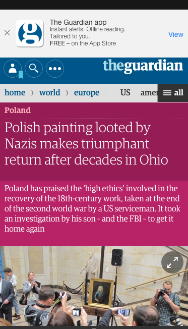
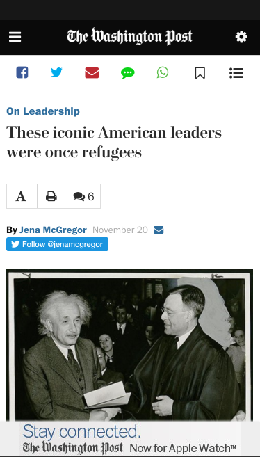

Wsiadamy do naszego wagonu
Leci pierwsze żądanie HTTP
Leci HTTP 303
Treść artykuły już pobrana!
Pobieramy obrazki, skrypty, skrypty reklam...
...
...
...
...
...
...
...
...
...
Mamy załadowane 50% obrazków!
...
...
...
Pokazuje się strona!
Ładuje się skrypt analityk
Ładuje się slideshow
...
...
Zaczyna się ładować Gemius
Podzbiór języka HTML
Zaprojektowany dla cache i proxy
Podzbiór - AMP HTML jest obsługiwany przez każdą przeglądarkę
Zoptymalizowany pod pre-rendering
Obrazki inline przed foldem
Łatwo cache'owalny
Javascript
Form / input
Frame
Object
Applet
Embed
| img | AMP-img |
| video | AMP-video |
| audio | AMP-audio |
| iframe | AMP-iframe |
Piksele ze statystykami
Element AMP-ad
W trakcie implementacji
<link rel="amphtml" href="http://twoja-wersja-amp">
WordPress.com
...
| HTML5 | AMP HTML |
| go.piszek.com/amp-guardian-r | go.piszek.com/amp-guardian-amp |
|  |
| HTML5 | AMP HTML |
| go.piszek.com/amp-bbc-r | go.piszek.com/amp-bbc-amp |
| HTML5 | AMP HTML |
| go.piszek.com/amp-wp-r | go.piszek.com/amp-wp-amp |
|  |
25.2% Internetu
WP.com: 173,730,430 odsłon dziennie
https://github.com/Automattic/amp-wp